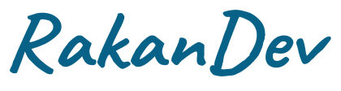
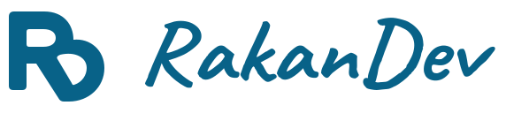
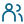

Ide berani.
Hasil berarti.
Website & sistem untuk usaha yang punya cerita. Lettering ekspresif, warna cerah, dan sentuhan personal.
Dua inisial, satu simbol.
Dibentuk untuk terus melangkah.
R: batang tegak, mangkuk, dan kaki diagonal.
D: lengkung kanan dengan batang diagonal yang sama.

Simbol + wordmark. Untuk header, proposal, dan komunikasi brand.
#086288
#4D8DBA
#97D7FF
#FFEFC4
Caveat Bold / Manrope 400, 500, 600
Wordmark dengan spasi optis & terminal khas.
R & D.
Satu tanda.
Mangkuk R bertemu lengkung D. Kaki diagonal R sekaligus menjadi batang D; dua ruang negatif menjaga keduanya terbaca. Semua varian memakai satu warna.
16-23px memakai versi mikro dengan ruang negatif lebih lega. Mulai 24px memakai detail utama. Keduanya satu warna.
Cerah.
Berani tampil.
Empat warna mengikuti palet pilihanmu. Sea Teal untuk logo dan tindakan; Harbor Blue, Sky Blue, serta Warm Cream untuk permukaan dan aksen. Klik swatch untuk menyalin HEX.
| Sea Teal / White | 6.75:1 |
| Sea Teal / Warm Cream | 5.91:1 |
| Hover / Cloud | 8.33:1 |
| Harbor Blue / White | 3.60:1 |
Label selalu menyertai warna. Teks normal minimal 4.5:1; batas kontrol bermakna minimal 3:1.
Harbor Blue di atas putih cocok untuk garis dan teks besar. Body memakai Sea Teal di atas white atau cream.
Punya karakter.
Punya cerita.
Caveat Bold membawa energi tulisan tangan seperti headline Odoo. Manrope mendampingi rincian dan navigasi; wordmark memakai outline yang disesuaikan.
Berani mulai.
Siap berkembang.
Aa Bb Cc Dd Ee Ff
0123456789
Untuk headline dan pesan pendek.
Satu sapuan aksen per kelompok teks.
Aa Bb Cc
Website yang baik membuat orang cepat memahami usahamu. Struktur yang jelas membantu mereka mengambil langkah berikutnya.
Body 16px / line height 1.65.
Lebar teks ideal 60-70 karakter.
Input mobile minimal 16px.
Tegas dalam aksi.
Ringan digunakan.
Komponen memakai warna cerah dan permukaan terang. Formulir berikut memperlihatkan validasi dan status secara lokal.
Gunakan email lengkap, misalnya halo@studio.id.
Ruang yang lega.
Ritme yang konsisten.
Grid 4px sebagai dasar. Koreksi optis diperbolehkan untuk lettering dan ilustrasi. Struktur menyesuaikan isi serta layar.
Container 1200px. Gutter 32px desktop / 20px mobile.
8 kolom tablet, 4 kolom mobile. Breakpoint 760 / 1100px.

Master 24px. Stroke 1.7-1.8px. Warna ink.
Kurva besar dan bidang cream hanya menandai bagian penting.
Easing cubic-bezier(.16, 1, .3, 1). Reveal maksimal 8px. Reduced motion menghapus pergerakan. Hindari animasi terus-menerus pada logo dan CTA.
Jaga karakter.
Gunakan dengan tepat.
Master SVG menjadi sumber utama. PNG untuk dokumen dan aplikasi raster. Gunakan versi yang sesuai latar serta ukuran.
Sisakan ruang minimal x dari tepi artwork. x = lebar batang R: 20 unit pada master 128px. Tambahkan ruang di luar margin transparan SVG.
Gunakan
Proporsi asli.
Teal di latar terang.
Cream di atas Sea Teal.
Mikro di bawah 24px.
Hindari
Memisahkan R dan D.
Distorsi atau rotasi.
Warna di luar varian.
Dua warna pada satu logo.


"Mulai dari kebutuhanmu."
Jelaskan manfaat, scope, dan tindakan. Gunakan kata yang dikenal pemilik usaha. Nama brand ditulis RakanDev.Wordmark berbasis Caveat Bold: spasi optis, kontur diperlebar 8%, terminal v memanjang. Caveat & Manrope berlisensi SIL OFL 1.1.
Dua huruf.
Satu alur.
Prinsip huruf menyatu dari referensi diterapkan ke R dan D. Keduanya berbagi struktur; ruang negatif menjaga identitas setiap huruf.
R / Kiri atas
Batang tegak dan mangkuk atas membentuk R. Kaki diagonal meneruskan gerak ke kanan bawah.
D / Kanan bawah
Lengkung luar D bertemu diagonal R. Batang bersama ini membuat kedua huruf saling mengunci.
Ruang negatif / Dua
Mangkuk R dan rongga D berbeda arah. Keduanya tetap terbuka dalam versi satu warna.
Sea Teal #086288. Cream atau white untuk versi inverse; satu warna per pemakaian.
Sambungan halus, sudut membulat, dan ketebalan yang dikoreksi secara optis.
Ruang negatif diperbesar pada ukuran kecil. Siluet dan arah huruf dipertahankan.